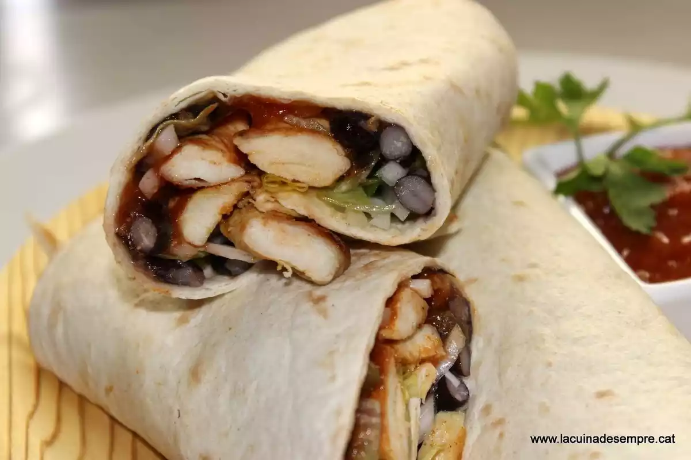

Fajitas de pollo abonado con frijoles negros
Deberá preparar los frijoles negros y poner el pollo en adobo, pero una vez hecho esto, el resto se hace rápidamente y si tiene niños a vasa es la oportunidad de hacerles pisar la cocina por algo más que abrir la nevera y coger chocolate.
Links
- Ir a ingredientes
- Ir a instrucciones

Respecto al tiempo de elaboración, os he puesto 30 minutos sólo. Aquí he calculado los 20 minutos propios de hacer el pollo a la plancha y montar las fajitas, más el tiempo de preparar el abono.
Ingredientes
- 8 fajitas de trigo o maíz
- salsa de tomate mexicana picante
- 2 pechugas cortadas en tiras
- frijoles negros cocidos
- frijoles negros cocidos
- cebolleta
- lechuga
Instrucciones
- Como os comento en la introducción, el día antes tendrá que preparar los frijoles negros. Y el día antes de hacerlos, ponerlos en remojo. Antes, pero lávelos bien para eliminar restos de tierra.
- Le echa hierbas, un hueso de jamón y un poco de comino y lo dore.
- Le echa los frijoles escurridos y los cubra con agua. Cocer aproximadamente dos horas a fuego medio-bajo.
- Una vez hechos y fríos, se reserva en la nevera.
- Y lo remueve bien.
- Lo ponga dentro del cuenco y lo mezcle bien con el adobo.
- Con la sartén bien caliente, saltear el pollo abonado.
- Y sirve todo en la mesa. Para hacer la "fajita" ponga primero un poco de frijoles negros.
Hacemos una receta que te arregla una cena en 20 minutos y además consigues un resultado espectacular.